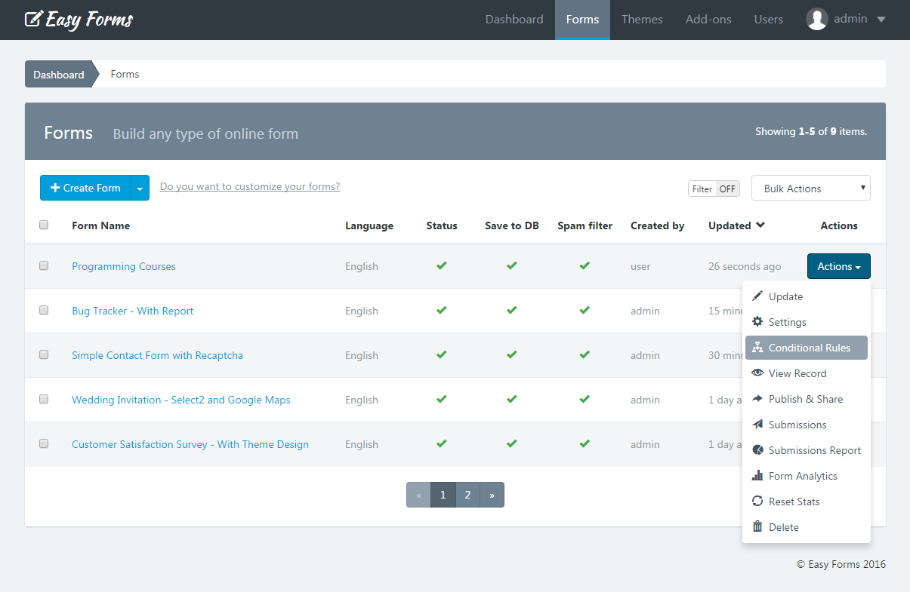

Form Manager ¶
Introduction ¶
Form Manager is the application most important part. You can see here all the forms you have been created in Easy Forms, plus all the actions that can be performed with each. For example, you can access to the users submissions, create reports, view statistics and more.
Note: To access the Form Manager click "Forms" menu in the navigation bar.
Create a form ¶
Before you create your first form, please read the Form Builder documentation.
If you are on the Dashboard or in the Form Manager, follow these steps:
- Click "Create Form"
- Drag and drop all the fields that your form needs.
- Drag and drop one button or more, according to your needs.
- Click "Save Form". A modal window will appear with 3 options:
- Continue editing the form.
- Go to Advanced Form Settings
- Go to Form Manager
Note: If you close the modal window without choosing one of these three options, when you "Save" again, you create another form and not edit the already created. This option can be useful if you want to create several similar forms quickly.
View Form Record ¶
To view the Form Record, click on the form name in the Form Manager. You can view from here its configuration and access all your options.
Update a Form ¶
If you have questions about updating your first form, please read the Form Builder documentation.
Updating a form can be done in two ways:
- From the Form Manager
- Locate the form to update
- Click on the "Actions" button and select "Update"
- From the Form Record
- To access the Form Record click the name of the form
- Then click the "Update" button (the pencil icon)
- Drag and drop one button or more, according to your needs.
- Click "Save Form".
Note: While you can update a form at any time, the information gathered by them (submissions and reports) may be affected or lose coherence.
Save Form as Template ¶
To save your Form as a Template, follow these steps:
- Go to the Form Builder
- Click the Up Arrow (At the right side of the "Save" button)
- Click "Save Form As Template"
- Then you will be redirected to the Template Manager.
Advanced Form Settings ¶
To access the Form Settings, you must be in the Form Manager. Then perform the following steps:
- Click on the name of the form you want to set
- Click on "Settings" (the gear icon)
In Settings, you will see 4 tabs. Each of these tabs contains the setting of a form aspect:
1. Form Settings ¶
It is the first tab of the Form Settings and is displayed by default. From here you can set up:
- Form Name: Displayed on the application administration pages and as the title of the form public page.
- Language: This language will be used to display form messages. For example, validation errors. Note that you can add another language to the application.
- Status: Indicates if the form is being shown. If set to Off, the form is no longer displayed to the user and instead appears a message indicating that the form is disabled and does not accept more submissions.
- Message: Sets the message to be displayed to the user when the form is disabled (Off).
- Schedule Form Activity: Set the start an end date in which the Form must be active (ON) Before and after it, the form is automatically deactivated.
- Start Date: Select the date on which the form will be activated.
- End Date: Select the date on which the form will be deactivated.
- Save DB: Indicates if form submissions must be stored in the database or not. In any case, this does not affect each emailing entry.
- Analytics: Enable/disable monitoring the form by the application.
- Spam filter: Indicates if the form should use the honeypot technique to filter submissions made by real users from the ones made by bots (spam).
- Use password: Enable or disable the form protection by using password. If the option is enabled, you should fill the Password field. Otherwise the form will not be saved and instead, a validation error will be displayed. By default is OFF.
- Authorized URLs: To prevent a third party from embedding your Form on their own website, your form can be restricted to a list of URLs that you authorize.
- No validate: Let you disable the fields validation in the client side, by the browser. Note that validation on the server side will not be disabled. It's recommended to have this option in Off.
- Autocomplete: Enables the browser's autocomplete to forms that have been previously filled. By default is ON.
- Save & Resume later: The browser automatically save the information entered by a user so a Form can be partially filled and then be resumed.
- Limit total number of submission: Specify the maximum number of submissions that the form will accept in a period of time.
- Total Number: Total number of submissions to be accepted.
- Per Time Period: Period in which the number is counted.
- Limit submissions from the same IP: Sets the maximum number of submissions that the Form can receive from the same user (by IP) in a period of time.
- Max Number: Maximum number of submissions allowed.
- Per Time Period: Period in which the number is counted.
Note: There are conditionally required fields. For example, if you activate the Schedule Form Activity option, you must enter a Start and End Date. If you leave these fields in blank, you cannot save the Form Settings and instead, an error message appears.
2. Confirmation Settings ¶
This tab allows you to configure two key aspects of the submission confirmation:
- Inform to the user immediately: Whether using a text message (alone or above the form) or redirect the user to another web page. In the first case, you must type the message to display and in the second, the full URL of the web.
- You can insert field variables into a confirmation URL or confirmation message, in similar way as a confirmation message by email. For more details, go to the 'Customizing the message' documentation.
- Send confirmation email to the user: If you select this option, each time a user submit a form will receive an email that will thank him.
Customizing the message ¶
You can insert field variables into a confirmation email and they'll be replaced with whatever the user insert into that field.
Every variable must be between a double punctuation keys. Eg. {{My Variable}}
In the following example, we show the two ways you can insert the variables:
- By using the field label: The variable {{Your Name}} has been inserted to the confirmation email and will be replaced by the name that the person puts in the Form.
- By using the ID field: In the picture you can see the variable {{text_263547}}, the same relates to the field {{Your Name}} of the form. In other words, we can use both types of variables to get field information. If your field doesn't have a label, this is the option you should use.
Additionally, you can use the following variables:
- {{form_id}}: Form ID.
- {{form_name}}: Form Name
- {{submission_id}}: Submission ID
- {{created_at}}: Date of Submission
- {{ip_address}}: IP Address.
- {{user_agent}}: Browser’s User Agent of Sender.
- {{country}}: Country of Sender.
- {{city}}: City of Sender.
- {{longitude}}: Geographic coordinate that specifies the east-west position of Sender.
- {{latitude}}: Geographic coordinate that specifies the north–south position of Sender.
This is a great way to personalize your message. Any form field can be used in this way.

3. Notification Settings ¶
In this tab you can configure how Form Submissions will be sent to your email (All data, only a link to the data or a custom message). Additionally, you can set the email subject, email addresses and more.
Two things to keep in mind:
- If the form has fields of "Email" type, you can select them as email senders (Reply To).
- If the form has fields of "File" type, you can attach uploaded files to emails.

Note: You can insert field variables into a notification email. For more details, go to the 'Confirmation Settings' documentation.
4. UI Settings ¶
UI = User Interface.
From here you can modify the form appearance: The design by using themes and the functionality using an external JavaScript file.
- Select a theme: You can select the theme that best fits your form or one you have created yourself. When you select a theme from the list, the form will be automatically displayed with the design chosen theme. You can change the themes over and over again to see differences.
- Load Javascript File: Enter the full URL of the JavaScript file that will be loaded with your form. By default, the jQuery library is available for you to make use of it when interacting with the form.
Note: To save all the changes you make on any tab, click the "Save" button.
Reset Stats ¶
You can reset the form stats from the Form Manager, by clicking the "Actions" button and “Reset Stats“. Then it will show a popup asking you to confirm your decision to delete the stats.
Delete a form ¶
You can delete a form from the Form Manager, by clicking the "Actions" button and "Delete". Then it will show a popup asking you to confirm your decision to delete the form.
Important! When you delete a Form, all content related to it will be deleted too, including: Submissions, reports and graphs, statistics, configurations and more: This action cannot be undone.
Add conditional logic to a form ¶
Easy Forms features a powerful and intuitive tool to add conditional logic to a form.
The rules are based on the information that the form fields have at any given time and allow you to disable or enable and show or hide fields and other elements in the DOM. In addition, you can also do math and skip pages with this powerful tool.
You can access the Rule Builder from the Form Manager:
- In the navigation bar, click "Forms"
- Click on the form name
- Click on the button "Conditional Rules" (Flow Graph icon)

Note: If you have questions about your first conditional rule, please read the Rule Builder documentation.
Publish and Share a Form ¶
You can access to publish and share a form using the Form Manager:
- In the navigation bar, click "Forms"
- Click on the form name you want to share
- Click on the "Publish and Share" button (the green arrow icon)
- This allows you to get the code to be placed on the website which will display the form (inline or in a modal pop-up). You can also copy the form permanent link and share it via email or social networks. And now, with the 1.1 version you can also share links with friendly URLs to your forms, immediately!
Note: Keep in mind that if you are going to share your form with a friendly URL, you must also update your theme background-image (if using one).
In addition, the forms can be published in two formats: With or Without design (no theme) and can be shared in different ways, depending on the configuration you assigned. For example, you can share the Form in complete page and without the application logo.
Apply a theme to the form ¶
To apply the theme you have created to a form, go to the Form Manager. Then, perform the following steps:
- Click the "Actions" button of the form in which you are going to apply the theme
- Click "Settings"
- Click the "UI Settings" tab
- Select a theme from the menu
- Click "Save"